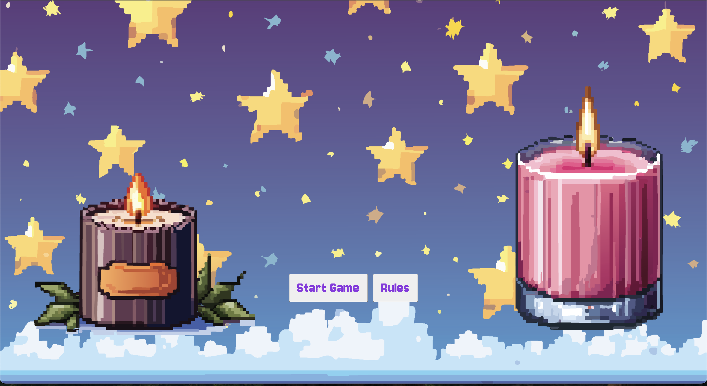
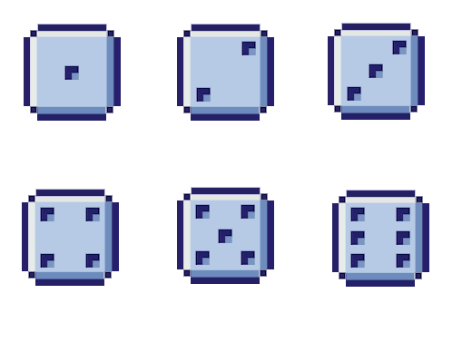

Here, I’m updating the visual design to be styled after 8-bit animation style. I really want to emphasize the “game” aspect of the page. All the images are pixel art, and I want the page to feel whimsical, even cartoon-like. I’m also going to move the layout of the buttons so that the dice sit above the player images (candles), and the other gameplay buttons sit below. I also want the scoring to be positioned above the candles as well. I am remaking the dice images, as well as creating 8-bit candle images and a pixelated starry background. In terms of interactive elements, I'm planning to make the winning candle expand with scent in a gif, and have intense "video game music" playing during gameplay.

